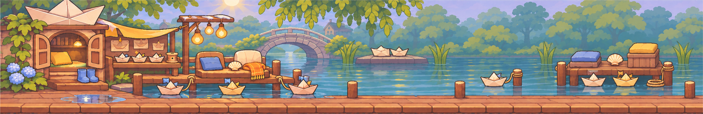
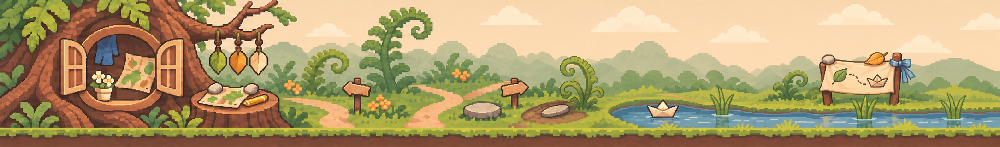
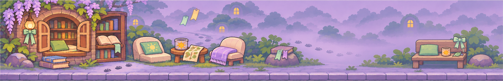

친구와 첫인사
여섯 명 모두 처음부터 선택할 수 있어요. 처음 만나는 친구와는 짧은 출발 대화를 나눠요. 바로 달리고 싶으면 ‘건너뛰기’를 눌러도 괜찮아요.
A LITTLE RUN, A LITTLE STORY
오늘은 누구의 하루를 달려 볼까요?
톡 눌러 장애물을 넘고,
쉬고 싶은 날엔 작은 이야기를 펼쳐요.

빨리 달리는 날도,
잠깐 머무는 날도.
처음부터 만날 수 있는 여섯 친구.
달리기 규칙은 같지만 좋아하는 풍경과 이야기는 달라요.
마음이 가는 친구의 집부터 둘러보세요.
MEET YOUR LITTLE FRIENDS

이 친구의 첫 이야기
여기서는 친구마다 배경 이야기·첫 이야기·두 번째 이야기, 총 18편을 읽을 수 있어요. 세 번째 이야기 6편은 아직 개요 단계예요. 웹의 읽기 상태는 Android 앱과 연동되지 않아요.
HOW WE SPEND A DAY
여섯 명 모두 처음부터 선택할 수 있어요. 처음 만나는 친구와는 짧은 출발 대화를 나눠요. 바로 달리고 싶으면 ‘건너뛰기’를 눌러도 괜찮아요.
게임 화면을 누르면 출발해요. 달리는 동안 톡 누르면 점프하고, 공중에서 한 번 더 누르면 2단 점프해요. 높은 탑은 한 번 더 뛰고, 떠 있는 가지는 점프하지 않고 아래로 지나가요.
쉬고 싶으면 오른쪽 위 ‘정지’를, 이어 달리고 싶으면 ‘진행’을 눌러요. 달린 뒤 도감을 펼쳐도, 바로 다시 달려도 좋아요. 긴 이야기를 다 읽지 않아도 게임을 계속할 수 있어요.
처음이어도 괜찮아요. 첫 게임에서는 튜토리얼로 조작을 안내해요. 다시 보고 싶으면 친구 선택 화면의 ‘튜토리얼하기’를 눌러요. 처음의 세계 소개와 친구별 첫 출발 대화는 본 뒤 매번 반복되지 않아요.
새 배경 적용본은 집을 출발할 때 한 번만 보여 줘요. 그 뒤에는 달리는 길만 계속 이어지고, 새 판을 시작하면 집에서 다시 출발해요.
앱 통합·검수 대기: 적용본은 작업 브랜치에 준비됐으며, 현재 기본 버전에 반영됐다고 안내하지 않아요.
이 웹사이트는 게임 소개와 이야기 감상용이에요. 달리기·첫 대화·튜토리얼은 Android 앱에서 이용해요.

대단한 일이 없어도,
같이 기억할 하루는 생기니까.
ABOUT THE PROJECT
점수와 함께 친구도 기억에 남는 달리기를 만들고 싶었어요.
같은 조작 위에 각자의 집과 생활, 말투를 담았습니다.
읽음·책갈피는 앱의 계정별 기기 저장이에요. 실제 기기 검수는 별도로 진행하고 있어요.
두 번째 이야기 6편은 원고가 확정되어 이 웹 파일에서 감상할 수 있어요. 세 번째 이야기 6편은 개요 상태예요. 음악은 현재 앱에서 캐릭터별로 재생되지 않아요. 원고가 준비된 240개 상황 대사는 이미 연결된 첫 출발 대화와 별도예요.
기능 안내 확인: 2026년 11월 11일. 새 배경 적용본의 통합 여부와 실제 기기 검수 결과는 구분해 표시해요.
205편의 이야기 조사 기록에서 감정과 관계를 표현하는 원리를 참고했습니다. 원전 전편을 완독했다는 뜻은 아닙니다. 기존 작품의 사건·대사·상징 묶음을 옮기지 않고 여섯 친구의 생활에서 이야기를 구성했습니다.
A팀은 캐릭터·이야기·대사·아트와 소개·선택·도감 화면을 맡습니다. B팀은 게임 엔진·조작·오디오·공용 저장·계정·통합 검증을 맡습니다. 음악 제작·검수와 위임된 게시 작업은 별도로 진행합니다. 이번 배경은 사용자 요청으로 A가 연결 코드까지 준비했고, B가 게임 통합과 기기 검수를 이어받습니다.
기획 의도 → 친구 선택 → 첫 대화·조작 안내 → 실제 달리기와 2단 점프·정지·진행 → 결과 → 도감의 이어 읽기·다시 읽기 순서로 소개합니다. 이미 본 안내는 다시 나오지 않을 수 있어 시연 경로를 미리 확인합니다. 준비 중인 음악과 후속편을 완성 기능으로 시연하지 않습니다. 자세한 역할과 시연 순서는 위 소개서에서 확인할 수 있습니다.
SEE YOU AROUND